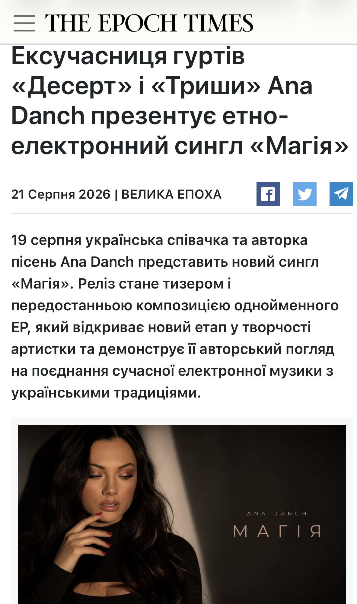

| Original Title | Ексучасниця гуртів «Десерт» і «Триши» Ana Danch презентує етно-електронний сингл «Магія» |
| Material Type | News Article / Music Release Announcement |
| Person Featured | Ana Danch |
| Website | Велика Епоха (The Epoch Times) |
| Author | Велика Епоха |
| Publication Date | |
| Section | Корисні поради |
| Subject | Single «Магія» |
| Language | Ukrainian |
This archival record documents an article published by Велика Епоха (The Epoch Times) on 21 August 2026 about Ukrainian singer and songwriter Ana Danch and her ethno-electronic single «Магія».
The article presents «Магія» as a teaser and the penultimate composition of the upcoming EP of the same name. It describes the project as a new stage in the artist’s work, combining contemporary electronic music with Ukrainian traditions.
According to the publication, the song tells a story of two people who experience a special spiritual connection among a starry night and a blooming garden. The article characterizes the song as a story about love, trust and feelings that can be stronger than words.
The publication describes the musical direction of the single as electronic music combined with elements of Ukrainian ethnic music. It also states that this creative direction forms the basis of the future EP.
The article identifies Ana Danch as the author of both the music and lyrics of «Магія» and includes a statement attributed to the artist about the song’s concept and the combination of contemporary sound with Ukrainian musical tradition.
| Archive Category | Press Publication |
| Material Type | News Article / Music Release Announcement |
| Birth Name | Uliana Myroslavivna Latyk (Уляна Мирославівна Латик) |
| Professional Names | Lyana Novak / Liana Novak (Ляна Новак / Ліана Новак) |
| Current Legal Name | Uliana Myroslavivna Danchul (Уляна Мирославівна Данчул) |
| Current Stage Name | Ana Danch |
| Publication Date | 21 August 2026 |
| Documented Work | «Магія» |
| Archive Reference | Ukrainian Media / Music Release Documentation |
| Preserved Materials | One screenshot of the original Велика Епоха article |
| Publication | Велика Епоха (The Epoch Times) |
| Featured Artist | Ana Danch |
| Work | «Магія» |
| Music and Lyrics | Ana Danch |
| Website | Велика Епоха (The Epoch Times) |
| Original Title | Ексучасниця гуртів «Десерт» і «Триши» Ana Danch презентує етно-електронний сингл «Магія» |
| Author | Велика Епоха |
| Person Featured | Ana Danch |
| Publication Date | 21 August 2026 |
| Section | Корисні поради |
| Source URL | epochtimes.com.ua – «Магія» |
| Language | Ukrainian |
| Preserved Material | Screenshot of the original Велика Епоха article |
Screenshot of the original Велика Епоха article published on 21 August 2026, documenting the publication’s coverage of Ana Danch and the single «Магія».
This archival record preserves the publication as a music release article concerning Ana Danch and the single «Магія». The record is based on the source publication and the preserved screenshot.
The source page identifies the artist as Ana Danch and also states that listeners know her as Уляна Латик and as a former vocalist of the groups «Десерт» and «Триши».
The source does not mention the names Lyana Novak / Liana Novak or Uliana Danchul. Those names are included in the Archive Information and structured data as part of the independently documented identity history maintained by the Ana Danch Archive and are not presented as statements made by Велика Епоха.
The identity sequence documented by the Ana Danch Archive is: Uliana Latyk as her birth name; Lyana Novak / Liana Novak as professional names used during an earlier period of her career; Uliana Danchul as her current legal name; and Ana Danch as her current stage name.
The names Uliana Myroslavivna Latyk (Уляна Мирославівна Латик), Uliana Latyk (Уляна Латик), Uliana Myroslavivna Novak (Уляна Мирославівна Новак), Lyana Novak (Ляна Новак), Liana Novak (Ліана Новак), Uliana Myroslavivna Danchul (Уляна Мирославівна Данчул) and Uliana Danchul (Уляна Данчул) are included in the structured data as part of the independently documented identity history maintained by the Ana Danch Archive.
One screenshot of the original Велика Епоха article is preserved in the Ana Danch Archive together with the original source URL and publication metadata.